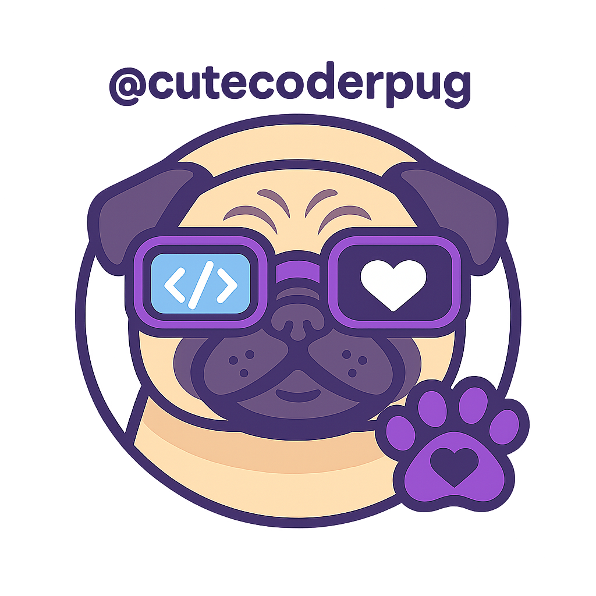

Liked by 4GeeksAcademy, html5, Web and 100,000 others
“Posteo esto desde mi protocolo de descanso. La unidad Patsy recomienda contemplar paisajes para evitar sobrecalentamiento neuronal.”
#ModoZen #HTML5 #CyberCalma
#ModoZen #HTML5 #CyberCalma